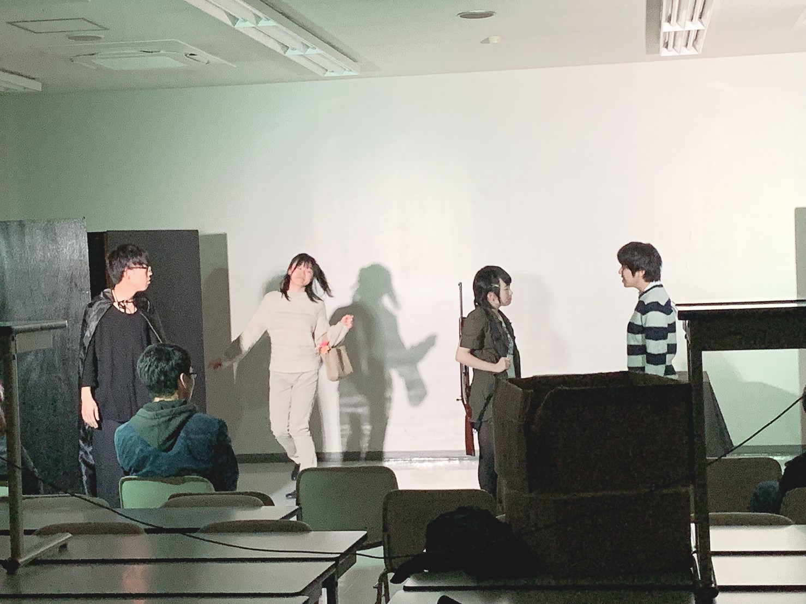

公演内容
「春のうららの森の中]

春のうららの森の中
森の長老の座を巡る、動物たちの物語。
人間にコウモリにリスに...ゾンビ？！
恋愛あり、シリアスありの、春らしく朗らかなストーリーです。
「すてきな悪巧み」

すてきなな悪巧み
あ、ほら南くん。記者さんが来たよ。今回のお話についてだって。
えー、博士が話して来てくださいよ。
君助手でしょ？……はーい。
簡単に言うとだね、僕の発明したﾏｯｼｰｰｰﾝが大活躍して悪の大組織を作り上げる話、って所かな！
以上２作品 3回の公演を通して、部員全員が力を合わせて作り上げた劇を発表でき、
一年生に演劇部のことを知ってもらえたと思います！！！！╭(๑•̀ㅂ•́)و
今年の劇も引き続き頑張っていきます！！